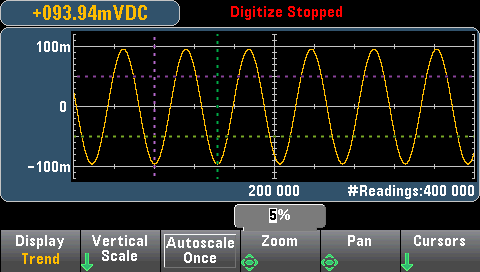
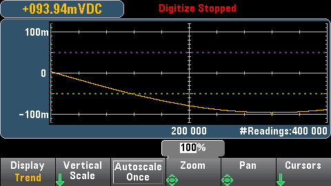
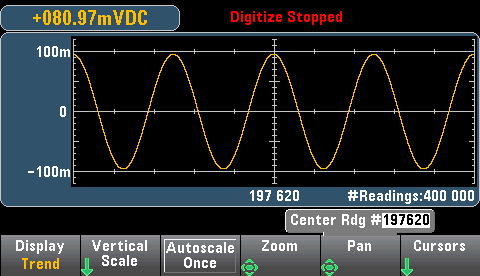
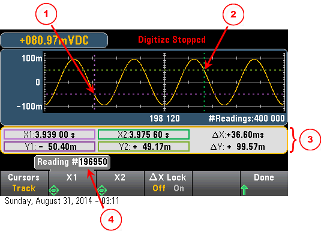
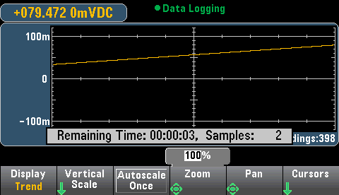

This topic applies only to 34465A/70 DMMs.
When the 34465A/70A DMM is in digitize mode (DIG option required), Zoom, Pan, and Cursor trend chart controls are available. To enter digitize mode, press [Acquire] > Acquire softkey > Digitize.
To select the trend chart, press [Display] followed by the Display softkey:
In the digitize mode, these trend chart softkeys are available:

Zoom - Sets the horizontal axis zoom percentage. Press Zoom and use the up/down arrow keys to select the amount of zoom, in percent. 100% is the maximum amount of zoom with a maximum of one reading shown per display pixel column. The display is 400 pixels wide. You can select a zoom percentage of 1%, 2%, 5%, 10%, 20%, 50%, or 100%. For example, the graphic above shows 5% zoom and the graphic below shows the same signal at 100% zoom:

Pan - Selects which reading in memory is displayed at the center of the screen. Use the up or right arrow key to increase the reading number displayed - this causes the graph data to move to the left. Use the down or left arrow key to decrease the reading number displayed - this causes the graph data to move to the right.
Press and release an arrow key to move the cursor one display pixel. Hold down an arrow key to move the cursor in 20 pixel increments. The number of readings represented per pixel depends on the zoom percentage.

Tip: Zoom to 100% to pan one reading at a time. After selecting a reading, you can then decrease the zoom, if necessary, to view the surrounding signal.
Cursors - Display and control X1, X2, Y1, Y2, and tracking cursors (shown as lines) on the trend chart.

X cursors are vertical lines along the sample or time axis. Use the up or right arrow key to move the cursor to the right; the down or left arrow key to move the cursor to the left. Press and release an arrow key to move the cursor one display pixel. Hold down an arrow key to move the cursor in 10 pixel increments. Y cursors are horizontal lines along the measurement (magnitude) axis in units of the selected measurement (DCV or DCI). Use the left and or right arrow keys to select a digit of magnitude displayed above the Y1 or Y2 softkey. You can then use the up or down arrows keys to increment/decrement the digit and move the cursor up or down by that amount. Cursor X1 and Y1 are violet; cursor X2 and Y2 are green.
Press Cursors > Cursors to display the choices:
X Only – Displays only the X1 and X2 cursors. In this mode, these softkeys are available:
Y Only – Displays only the Y1 and Y2 cursors. In this mode, these softkeys are available:
X and Y – Displays the X1, X2, Y1 and Y2 cursors. In this mode, these softkeys are available:
Track Rdng at X - Select two readings, by reading number, using X1 and X2 softkeys to display X (time) and Y (magnitude) values for each reading, and the delta X and delta Y values.

In the graphic above:
Y1 cursor tracks X1 cursor position.
Y2 cursor tracks X2 cursor position.
Cursor time and amplitude information, ∆X, ∆Y.
Press X1 or X2 to display reading number.
These softkeys are available for Track Rdng at X mode:
Tip: To record the X and Y data and the delta X and Y data as a screen shot, take a screen shot of the Web UI, not the front panel screen shot utility.
This topic applies only to the 34465A/70 DMMs, data logging is standard for these DMMs. See Data Logging for more information on how to configure data logging.
When the DMM is in data log mode, Zoom, Pan, and Cursor trend chart controls are available. To enter data log mode, press [Acquire] > Acquire softkey > Data Log.
To select the trend chart, press [Display] followed by the Display softkey:
In the data log mode, trend chart behavior depends on whether you are data logging to instrument memory, or data logging to a file(s).
When data logging to memory, the trend chart maps each reading to a dot in a pixel column, draws a line between multiple dots in each column, and draws a line from the last reading in a column to the first reading in the next column.

When data logging to memory, Zoom, Pan, and Cursors are available and operate as described above in the digitize section.
When data logging to files, the trend chart behaves in a manner similar to that of the continuous measurement mode. That is, the number of readings shown per pixel column depends on the reading rate and the selected Time Window.
.png)
Zoom, Pan, and Cursors are not available when data logging to files. Refer to Trend Chart (Continuous Measurement Mode) for more information.